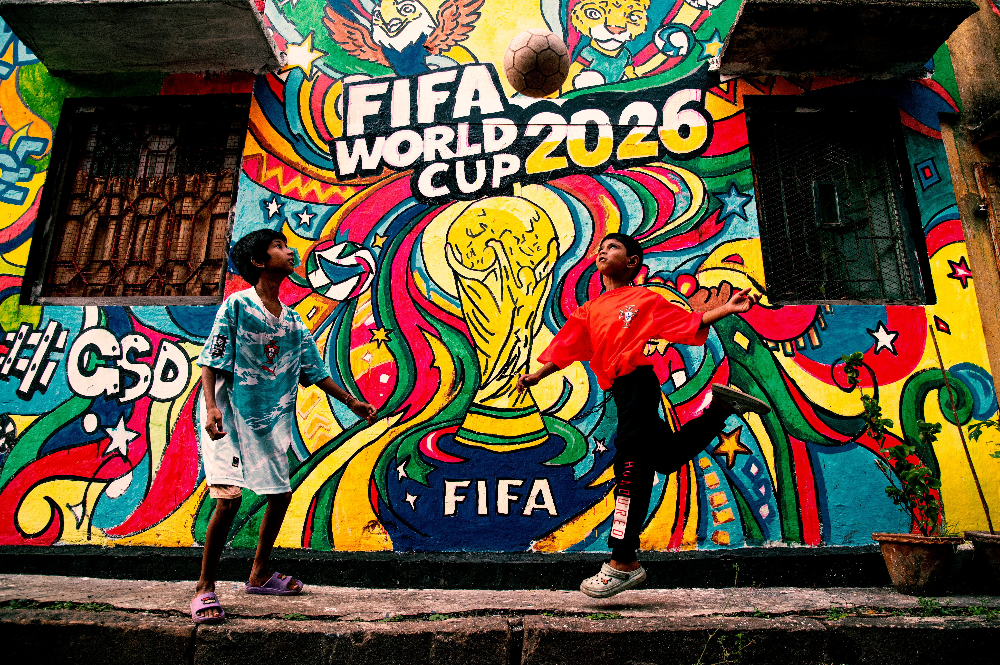

The FIFA World Cup is an international association football competition among the senior men's national teams of the members of the Fédération Internationale de Football Association (FIFA), the sport's global governing body. The tournament has been held every four years since the inaugural tournament in 1930, with the exception of 1942 and 1946 during and shortly after World War II. The reigning champion is Spain, who won their second title at the 23rd edition of the competition, the 2026 World Cup, by defeating the holders, Argentina.
The world's first international football match was a challenge match played in Glasgow in 1872 between Scotland and England.[9] The first international tournament for nations, the inaugural British Home Championship, took place in 1884 and included games between England, Scotland, Wales, and Ireland.[10] As football grew in popularity in other parts of the world at the start of the 20th century, it was held as a demonstration sport with no medals awarded at the 1900 and 1904 Summer Olympics (the International Olympic Committee has retroactively upgraded their status to official events) and at the unofficial 1906 Intercalated Games.[11] After FIFA was founded in 1904, it tried to arrange an international football tournament between nations outside the Olympic framework in Switzerland in 1906. These were very early days for international football, and the official history of FIFA describes the competition as having been unsuccessful.
The FIFA World Cup is considered one of the most-watched events in the world. The 2018 World Cup, for example, was watched by 3.5 billion people[103]—just under half of the world’s population, rising to 5 billion in 2022.[7] A new record is expected for 2026 due to the expansion of the field of participants. For 2026, the tournament is expected to contribute $40 billion to global gross domestic product (GDP). FIFA’s direct revenue from broadcast rights, sponsorship, hospitality, and licensing is projected to range between $10 and $11 billion for 2026.[103] FIFA generated $4.8 billion in revenue from the 2014 tournament,[104] and $6.1 billion from the 2018 tournament.[105] The costs of hosting the tournaments are also rising steadily for host nations[106] and have been estimated at over $200 billion in the case of Qatar 2022.